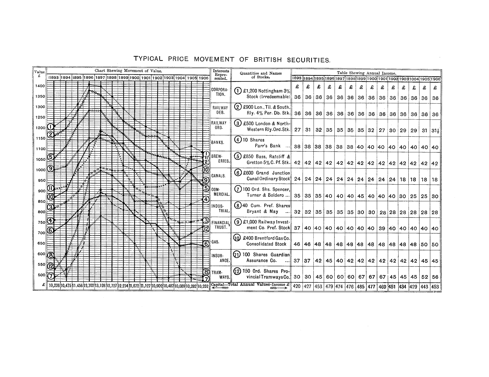
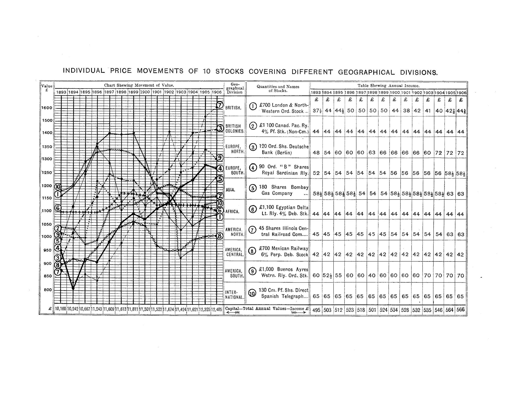

Forty-three years before Harry Markowitz published Modern Portfolio Theory, a German-born London financier proved that geographical diversification could make investment "an exact science."
1880 – 1909Henry Lowenfeld founded the Investment Registry in 1880 and spent three decades developing a systematic, data-driven approach to portfolio construction. His key insight—that stocks in different countries move independently because trade cycles differ—anticipated the core logic of modern diversification theory by nearly half a century.
Lowenfeld published three major works on investment that laid out his principles with remarkable clarity. Together they form a complete system: diagnosis of the problem, the theoretical solution, and practical instructions for implementation.
Lowenfeld's most famous contribution: two charts that tell the entire story of diversification at a glance.


“The whole appearance of the International Chart clearly demonstrates that as the trade prosperity of each country differs from that of all other countries, so the price movements of the stocks in each country differ from those of all other countries.”
Split capital equally across countries with different trade cycles. A depression in one quarter is counterbalanced by prosperity in another.
Investment is a system of averages. Like insurance, sound investing requires that falls in some holdings are offset by rises in others.
Local trade may suffer cyclical depression, but the trade of the whole world is perpetually expanding—the tailwind behind a global portfolio.
A "third influence" beyond capital safety and income—the dominant market influence of national trade conditions—controls the realisable value of stocks.
"There is no stock in existence, the future realisable value of which is ascertainable with certainty." Individual risk can never be eliminated—only averaged.
Younger countries tend to increase their share of world trade. Their credit improves, and their stocks "must show a special tendency to rise in value."
Lowenfeld's masterwork and the theoretical foundation of his system. Using charts of actual stock price movements spanning 1893–1907, he demonstrates that British securities all move in lockstep—governed by a single national trade cycle—while stocks from different countries move independently. The conclusion: geographical distribution of capital is the only reliable method of protecting both capital and income.
No matter how safe a security appears, its future realisable value is inherently uncertain. The only defence is a system of averages—like an insurance company that cannot predict individual outcomes but can predict aggregate results.
Beyond capital safety and income yield, there is a third force—national trade conditions—that overwhelmingly controls the market price of even the soundest stocks. An irredeemable debenture with perfectly safe income still fluctuates because of this market force.
British investors who restricted their holdings to domestic securities were "speculating on that country's future trading prosperity." When Britain's trade cycle turned down, all twelve stocks on Lowenfeld's British chart fell together—no diversification at all.
Because trade cycles in different countries are unsynchronised, stocks from different nations naturally form a system of "poise and counterpoise." A globally distributed portfolio produces stable capital values even when individual countries suffer.
While any single country's trade alternates between boom and depression, world trade as a whole is "constantly expanding." A globally distributed portfolio rides this secular growth, creating a natural tendency for total portfolio value to appreciate.
“It has been theoretically and practically proved that by splitting up invested capital in equal proportions among a number of investments similar in quality, yet whose price movements are all governed by different influences, a combination of investments is obtained in which a fall in the realisable value of a portion of them is simultaneously counterbalanced by a rise in the realisable value of another portion.”
“Precisely as a carefully-studied system of averages eliminates all taint of gambling from a sound system of insurance business, so a sound system of averages, based upon the Geographical Distribution of Capital, should reduce to a minimum the taint of speculation from the act of investment.”
A collection of essays reprinted from the Financial Review of Reviews, this is Lowenfeld's practical companion to Exact Science. It shows the ordinary investor how to evaluate individual securities, detect investment crazes, test the soundness of an existing portfolio, and construct a properly balanced Investment List. It ranges into public-policy territory with chapters on unjust taxation, the decline of Consols, and the origins of money scares—always circling back to the lesson that uninformed, parochial investing destroys capital on a national scale.
Selecting individually sound stocks is not enough; the entire list must function as a unified scheme. Stocks must be uniform in quality, identical in width of fluctuation, and held in equal amounts, so that a fall in one is genuinely counterbalanced by a rise in another. “A badly assorted list of intrinsically sound and perfectly safe investments may give most unsatisfactory results.”
Every investor should regularly ask: Can at least a quarter of the portfolio be liquidated without loss? Does total realisable value remain fairly stable year to year? Is income regular and not declining? A portfolio that fails any test is “unworthy to have any further confidence placed in it.”
The stocks that receive the most newspaper ink are, almost by definition, the most overpriced. Obscure but well-secured trading debentures barely moved in a decade while “marketable” Home Railway debentures fell 25–40 points. Low yield does not mean safety.
Securities “possess both life and growth, and like every other living thing which grows they require constant supervision.” The sound investment of today is the “neglected and obsolete industry of to-morrow.” Cost price is irrelevant; present value and present yield are the only valid basis for reckoning.
“Just as a kitten is unable to restrain itself from eagerly jumping in pursuit of a cork which is steadily drawn away from it, so the average investor finds himself impelled to jump into a market which is steadily rising. It matters not to the kitten that past experience has taught it that the cork is possessed of no real vitality, any more than it matters to the investor that bitter experience has taught him that these spurts of artificial activity in a new market are just as devoid of real life as is the inanimate cork which fascinates the kitten. In both cases the attractive force is motion—motion which to the unreasoning observer bears a certain resemblance to life.”
“The list of Brewery and Distillery stocks presents the appearance of a great battlefield piled high with corpses and strewn with the shattered remains of numberless victims crippled for life. If anyone should ask who profited by this craze, the only possible answer would be—the Brewers, who sold their properties at high prices, and the Promoters who brought out the concerns.”
Written to teach ordinary British investors—from the small saver with his first hundred pounds to the wealthy retiree—the fundamental principles of sound investment. Lowenfeld's central argument here is that capital is “stored-up human effort” carrying a moral responsibility, and that its preservation requires systematic geographical diversification across the world's trading regions. It serves as the accessible companion to Exact Science, translating its statistical findings into plain advice for the general reader. Dedicated to British bank managers, whom Lowenfeld hoped would disseminate investment knowledge to their customers.
Money is not an abstraction but crystallised human labour. Wasting capital is tantamount to wasting the effort of one's fellow men. “The smaller the capital-sum, the greater should be the caution in disposing of it.”
Lowenfeld classifies investors into ten sub-types, from the rich retiree needing only capital safety to the young earner building from nothing. Each requires a different class of security. Buying without knowing which type you are is “tantamount to taking a wrong kind of medicine.”
Even Consols and Trustee securities fluctuate in value. The most dangerous investor is the one who believes he has invested safely while actually running concentrated risk. “To hold stocks without realising the fact that each one of them is a speculation, is like handling a revolver without knowing that it is loaded.”
Capital is “the root of all income.” The difference between the highest and lowest reasonable yield is only about 2.5% per annum; it would take 11 years of that extra income to recover even a quarter of one's capital if lost through faulty concentration. Never spend more than 85–95% of dividends received.
“A great thinker writes a book, an imaginative artist paints an epoch-making picture, a gifted musician composes an immortal opera—all these creations are bought and paid for like the output of the most prosaic manufacturer. In truth, the most wondrous production of the brain and the most insignificant results of manual labour receive material compensation similar in quality and differing only in quantity. So that the tangible return for human effort is measured by money, and money is latent energy, which in its turn commands the exertion of human effort.”
“Investment is a child, with statistics as father, common sense as mother, and speculation as a dissipated family relation. The closer the union between father and mother for the purpose of boycotting this reprobate relation, the larger will be the heritage of the legitimate heir.”
Lowenfeld establishes his firm at 2 Waterloo Place, London, to advise investors on the systematic management of capital.
A monthly journal providing the statistical data investors need to monitor their geographically distributed portfolios.
Lowenfeld's famous paired charts—British vs. International—appear in the Financial Review of Reviews, providing visual proof of the diversification principle.
The enlarged and revised edition of his masterwork, gathering three decades of evidence into a systematic treatise on geographical diversification.
Harry Markowitz formalises the mathematics of diversification. The core insight—that low correlation between assets reduces portfolio risk—is the same principle Lowenfeld demonstrated empirically 43 years earlier.
“If an investor widely distributes his capital over the earth's surface, local depression in one quarter will be counterbalanced by the local trade activity in another quarter … the world's perpetual trade expansion will automatically tend to increase the realisable capital value of his investments year by year.”
— Henry Lowenfeld, Investment an Exact Science (1909)